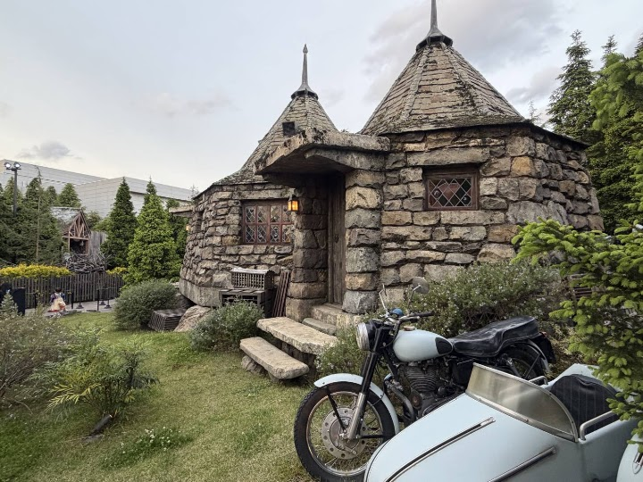
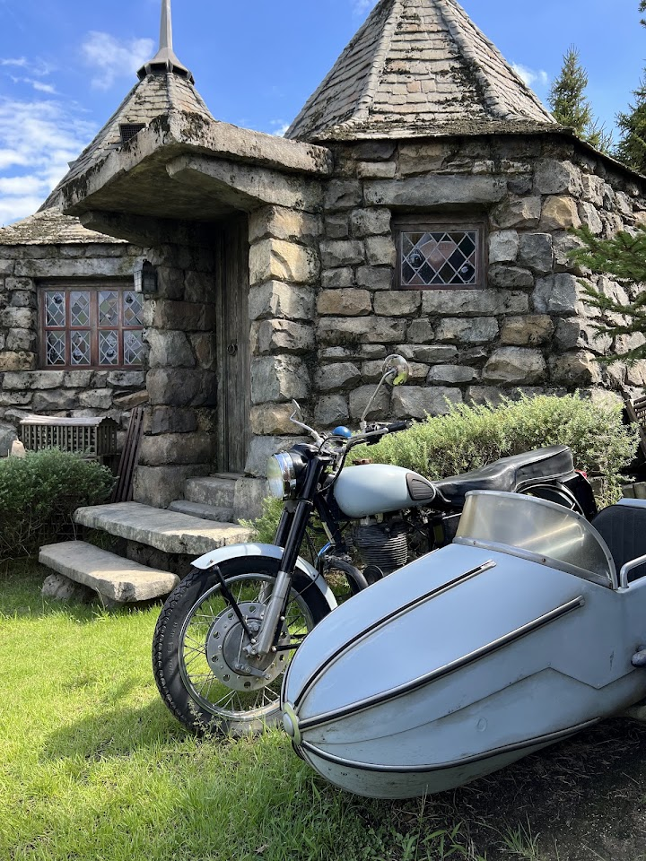
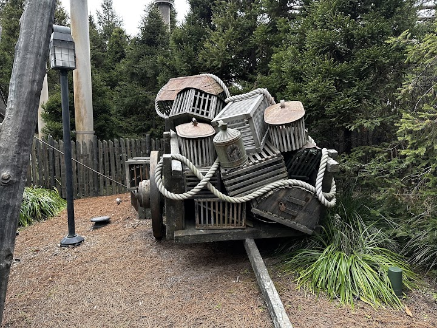
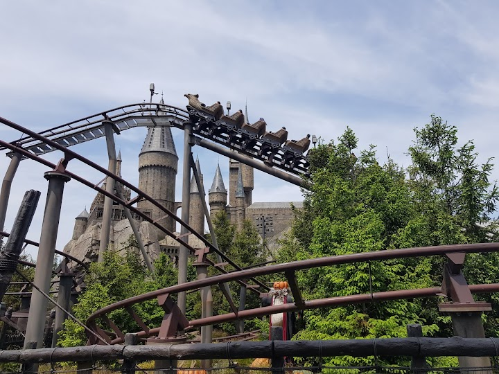
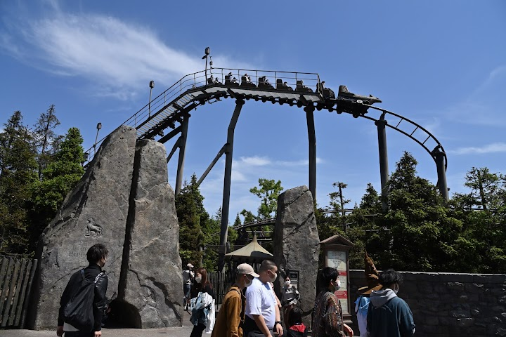

Flight of the Hippogriff
A short, gentle family roller coaster in the Wizarding World that follows Buckbeak the hippogriff around Hagrid's hut. It is aimed at younger riders, so keep it for a spare moment.
Open in Google Maps (street view, more photos and reviews there)






Visitor tips on finding it and getting there
We didn't have a free pass for this ride but we had spare time until our Nintendo world entrance time slot. The screen showed 90 minutes of wait but in reality it was only 60. The ride itself is quite underwhelming (but indeed nice and has a few fun moments. It could have been more fun if it wasn't that short). The view of the Hogwarts castle is very special.
The rollercoaster is less than one minute and really short, so I was lucky with the express pass there was almost no waiting time.. but not sure if it really worth the wait for less than 1 minute ride. But nevertheless it is s cute & fun ride and is is beautifully made with Hagrid‘s hut :)